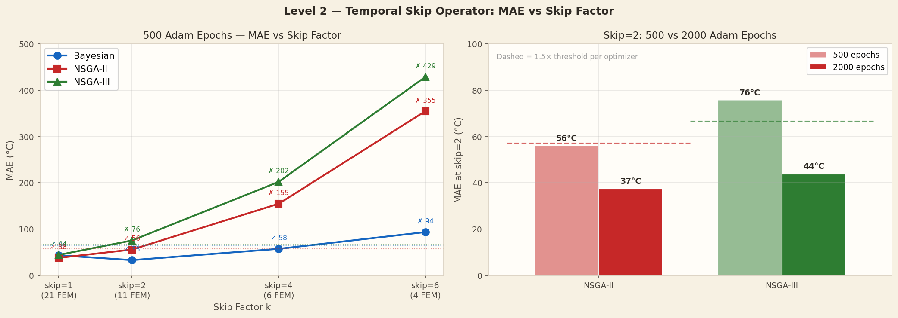

Visualisations
Result Plots
Skip Factor vs MAE — 500 ep & 2000 ep

MAE as a function of skip factor. Dashed = 500 ep, solid = 2000 ep.
FEM vs PINN Step Distribution

Actual time steps coloured by solver used (FEM=blue, PINN=orange).